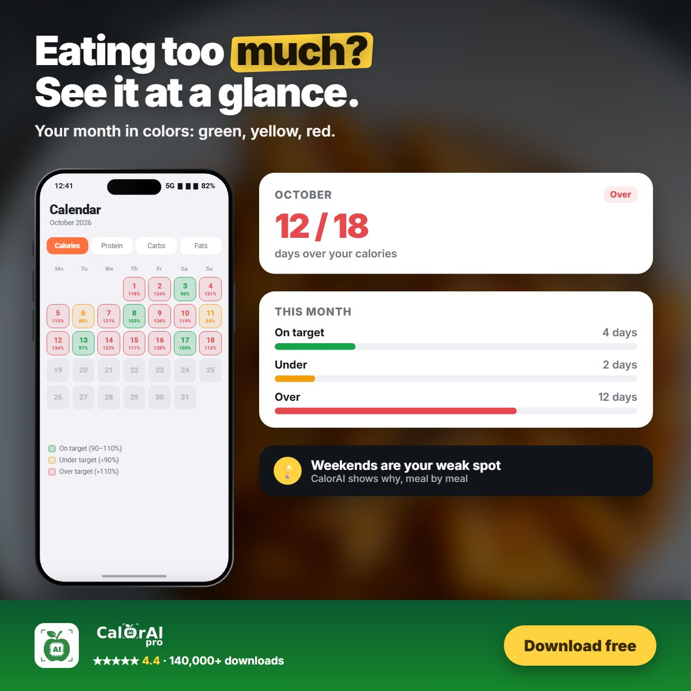

"Just count your calories" is common advice. But does writing down what you eat actually help people lose weight, or does it only work for very disciplined people? Researchers have studied this question for decades, and the answer is surprisingly consistent.
What the studies found
Self-monitoring is linked to weight loss
A systematic review of 22 studies on self-monitoring in weight loss found a significant association between tracking diet and losing weight in almost every study that looked at it[1]. The review concluded that self-monitoring is a core part of successful behavioural weight-loss programmes.
More records, more weight lost
In a large trial with nearly 1,700 adults, the number of food records people kept per week was one of the strongest predictors of weight loss. Participants who kept food records on most days lost about twice as much weight as those who kept few or none[2].
It doesn't have to take long
A common worry is that tracking takes too much time. A 2019 study of an online weight-loss programme found that the most successful participants spent on average about 15 minutes a day on tracking by the end of the programme, and the time it took went down as people got used to it. What mattered most was logging often, not spending a long time on each entry[3].

Why tracking works
- Awareness. Most people underestimate how much they eat. Writing it down replaces guesses with numbers.
- Feedback. You can see the effect of a choice the same day, not weeks later on the scale.
- Patterns. Tracking shows habits such as late-night snacking or bigger weekend meals. One study found that adults ate more on weekends, which slowed weight loss when it was not accounted for[4].
- Accountability. Knowing you will log a meal makes you think about it before you eat.
Why many people give up
If tracking works, why do so many people stop? The usual reasons are practical: searching a database for every ingredient is slow, portion sizes are hard to judge, and missing a few days makes people feel they have "failed".
The research points to a simple fix: make each log faster so you can log more often. Consistency beats precision.
How to track without burning out
- Log as you eat, not at the end of the day when you have forgotten details.
- Use the fastest method available. A photo or a voice note is faster than searching a database.
- Look at the week, not just the day. One high day does not ruin anything; a pattern does.
- Don't aim for perfect. A rough log every day is more useful than a perfect log once a week.
CalorAI was built around these findings. You can log a meal by taking a photo, speaking or typing a few words, and the AI calculates calories and macros for you. The calendar shows every day in green, yellow or red, so you can see your patterns at a glance.

Make tracking the easy part
Log a meal with a photo, your voice or a few words. CalorAI does the counting.
Sources
- Burke LE, Wang J, Sevick MA. "Self-monitoring in weight loss: a systematic review of the literature." Journal of the American Dietetic Association. 2011;111(1):92–102. doi.org/10.1016/j.jada.2010.10.008
- Hollis JF, Gullion CM, Stevens VJ, et al. "Weight loss during the intensive intervention phase of the weight-loss maintenance trial." American Journal of Preventive Medicine. 2008;35(2):118–126. doi.org/10.1016/j.amepre.2008.04.013
- Harvey J, Krukowski R, Priest J, West D. "Log Often, Lose More: Electronic Dietary Self-Monitoring for Weight Loss." Obesity. 2019;27(3):380–384. doi.org/10.1002/oby.22382
- Racette SB, Weiss EP, Schechtman KB, et al. "Influence of weekend lifestyle patterns on body weight." Obesity. 2008;16(8):1826–1830. doi.org/10.1038/oby.2008.320
This article is for general information and is not medical advice. Talk to a doctor or registered dietitian before making major changes to your diet, especially if you have a medical condition, allergy, or are pregnant.